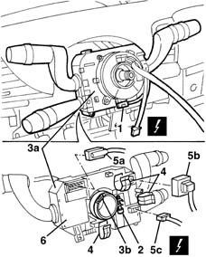

5550A12 complete stalk unit - r+r for versions with air bag
- Path
- Procedures > 55 ELECTRICAL EQUIPMENT > 5550 MANOEUVRING AND WARNING SIGNALS > 5550A stalk unit > 5550A12 complete stalk unit - r+r for versions with air bag
- Kind
- repair procedure (removal / refitting; the operation number is the code)
- Applies to
- all engines; all production periods
- Interactive page
- https://sloeber94.github.io/elrnDB-lYpsln/en/#/2429423
Applies to: all engines; all production periods
 Removing
Removing
 Refitting
RefittingPlace the steering wheel in the centred position with the wheels straight.
4110A11 steering wheel - r+r for replacement or check for versions with air bag
7040A26 steering column trim - r+r
1. Disconnect the electrical connection.
 | Name | Connector |
|---|---|---|
1 | Clock spring coupling |
2. Loosen the stalk unit retaining band.
3. Move stalk unit (3a) slightly) by releasing tab (3b) from its retainer.
4. Open the cable band.
5. Disconnect the electrical connections (5a, 5b, 5c).
| Name | Connector |
|---|---|---|
5a | Steering column switch unit |
| Name | Connector |
|---|---|---|
5b | Steering column switch unit |
| Name | Connector |
|---|---|---|
5b | Steering column switch unit |
| Name | Connector |
|---|---|---|
5c | Cruise Control |
6. Recover the steering column switch unit.
If necessary, remove the clock spring, 5580C12 clock spring for air bag module on steering wheel r r for precautions to be observed.

Applies to: all engines; all production periods
Refitting
RemovingCheck that the stalk unit is not damaged.
If removed, position the clock spring and bolt in place.
Connect the electrical connections to the stalk unit.
Position the wires correctly and secure with bands.
Position the stalk unit and do up the tabs.
Tighten the retaining band.
Connect the electrical connection for the clock spring.
7040A26 steering column trim - r+r
4110A11 steering wheel - r+r for replacement or check for versions with air bag
Check the devices are working properly.
Topics linked from this page (9)
- 4110A11 steering wheel - r+r for replacement or check for versions with air bag
- 5580C12 clock spring for air bag module on steering wheel r r
- 5580C18 air bag module - r+r
- 7040A26 steering column trim - r+r
- D47 Clock spring coupling ( FACIA )
- H5A Steering column switch unit ( FRONT )
- H5B Steering column switch unit ( FACIA )
- H5C Steering column switch unit ( FACIA )
- H7 Cruise Control
Topics that link to this page (7)
- K06 TRIP METER DOES NOT ZERO
- 4110A46 INTERMEDIATE SHAFT CONNECTED TO STEERING BOX - R.R.
- 4110D20 steering electrical control device - r r
- 4110D35 Electrically controlled steering CONTROL UNIT/MOTOR - R.R.
- 5040C10 air conditioner box - r+r
- 5040C12 air conditioner housing - r r with facia disconnected
- 5520A12 ignition switch assembly - r r for versions with air bag